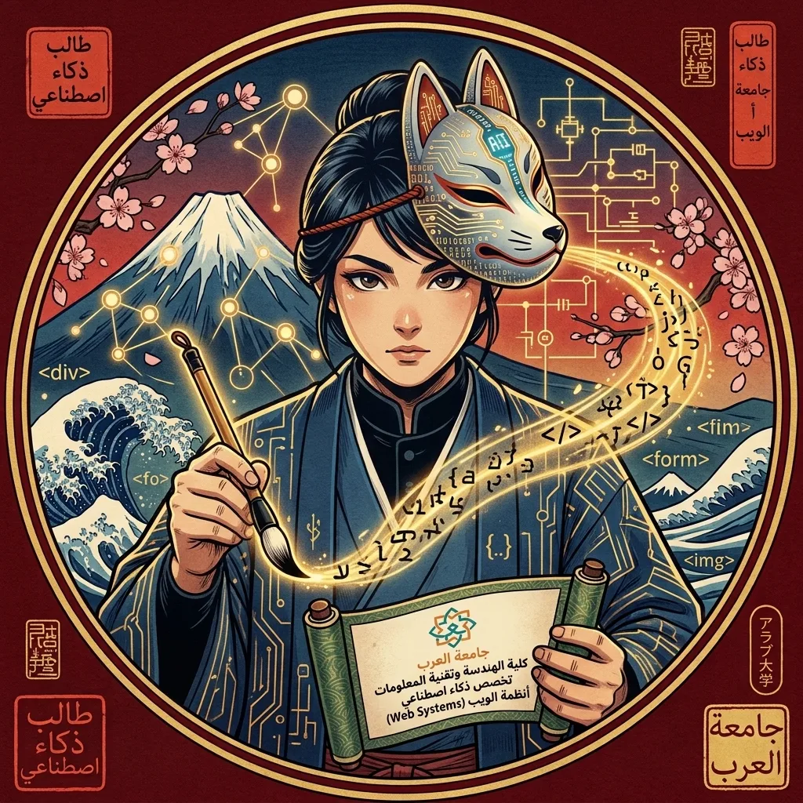

مرحباً، أنا طالب تخصص ذكاء اصطناعي (Artificial Intelligence) في كلية الهندسة وتقنية المعلومات[cite: 2, 5, 6]. أجمع في رحلتي الأكاديمية بين بناء الأنظمة الذكية وتصميم تجارب الويب المستوحاة من الفنون اليابانية التقليدية.

أدرس حالياً في كلية الهندسة وتقنية المعلومات – تخصص الذكاء الاصطناعي، وأسعى لتطوير حلول برمجية ذكية تجمع بين خوارزميات التعلم الآلي وتطبيقات أنظمة الويب (Web Systems) الحديثة. أستلهم تصاميمي من الفنون اليابانية الكلاسيكية مثل نقوش الأمواج وألوان الطبيعة الموسمية.
| المرحلة / المقرر | المؤسسة الأكاديمية | التخصص / التركيز | الحالة |
|---|---|---|---|
| بكالوريوس الذكاء الاصطناعي | جامعة العرب - كلية الهندسة وتقنية المعلومات | الذكاء الاصطناعي وتعلم الآلة (AI) | قيد الدراسة |
| مقرر اللغات | جامعة الاميرة نوره(قسم نادي اللغات) | (اليابانيه-الصينيه -الارديه -التركية) | مستمر |
| الثانوية العامة | المرحلة الثانوية | المسار العلمي | مكتمل |
يسعدني استقبال رسائلك واستفساراتك حول الذكاء الاصطناعي أو مشاريع الويب: